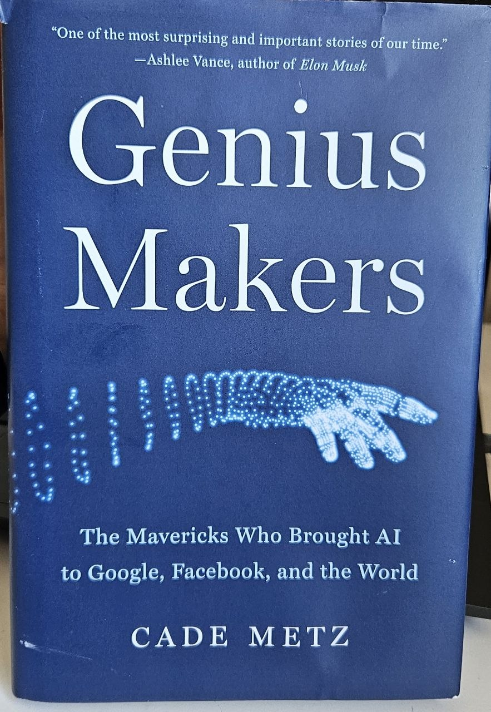
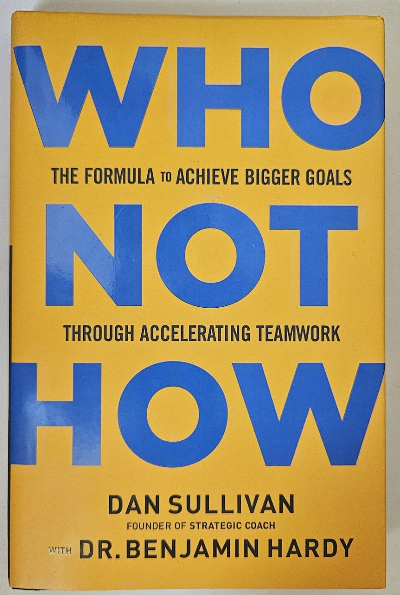
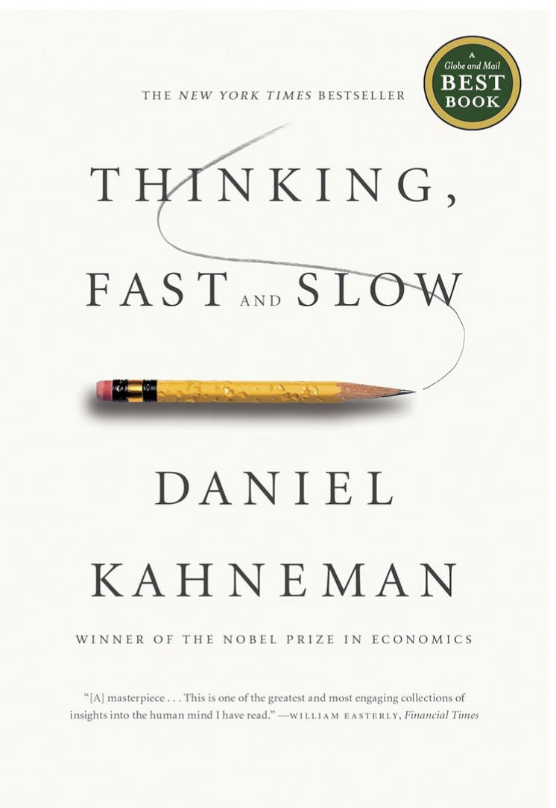
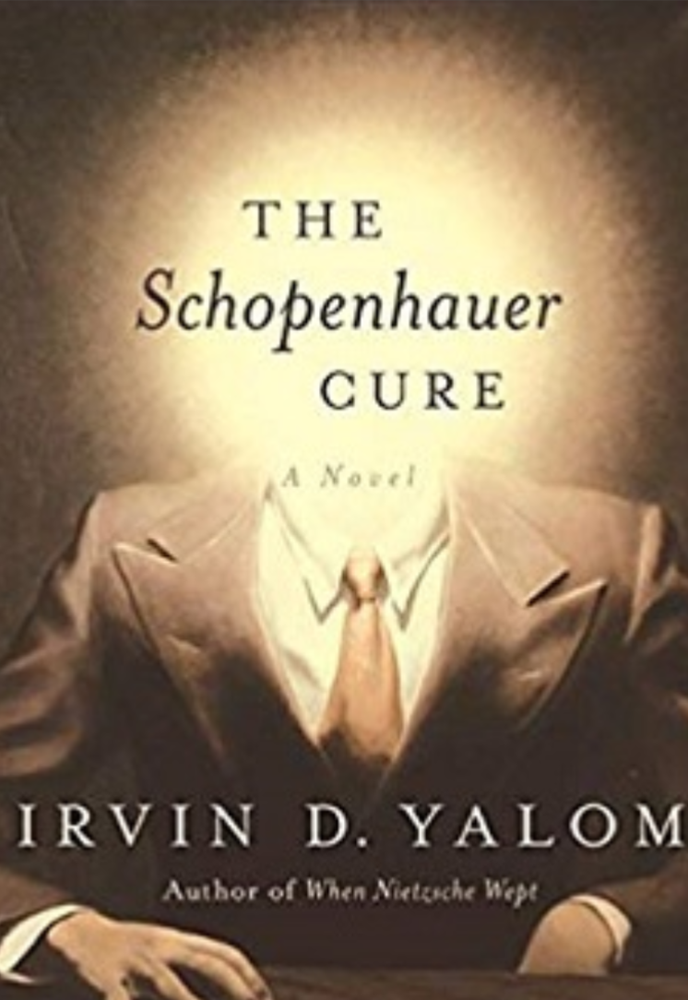

A curated collection of books that have influenced my thinking, technical perspective, or worldview.

Thoughts? A fascinating story about some of the most inspiring people in AI. My favorite part was learning about Geoffrey Hinton's life. I wasn't aware of his physical health challenges, and I find it amazing how he managed to reach where he is today despite them.
Thoughts? The goal of this book is clear: to teach critical thinking. But, to do so, you first need to understand what uncritical thinking is and the various biases that can influence it.

Thoughts? If you think adding more people to your business or collaborating with others is not cost-effective, I highly recommend reading this book. It will completely change your mindset.

Thoughts?

Thoughts? A famous philosopher, Schopenhauer, is trying to get cured? If you don’t know him, he had a strong but quite negative view of life. He was quite isolated and often saw life as suffering—which, in some ways, I also agree with. note: I read this book in Persian (my mother language).
Thoughts? Irvin Yalom is a psychiatrist at Stanford. His books mainly focus on human's behavior. In this book (fictional), Nietzsche meets a physician for deep conversations about human suffering, meaning, and life. note: I read this book in Persian (my mother language).
Thoughts? I read this book 5 times. If you don't have a spiritual perspective it may not interest you. But if you have, you won't regret it at all. This is all I can say in this tiny text box :)! note: I read this book in Persian (my mother language).